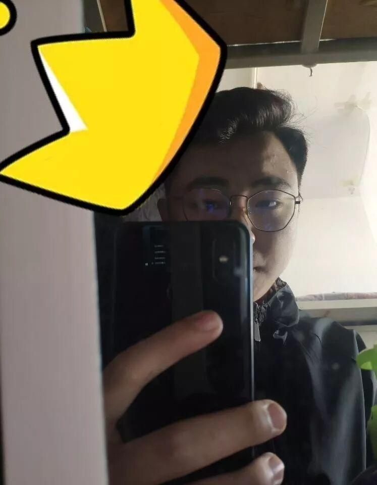
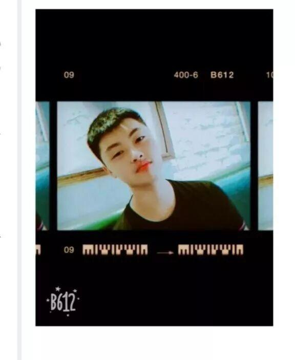
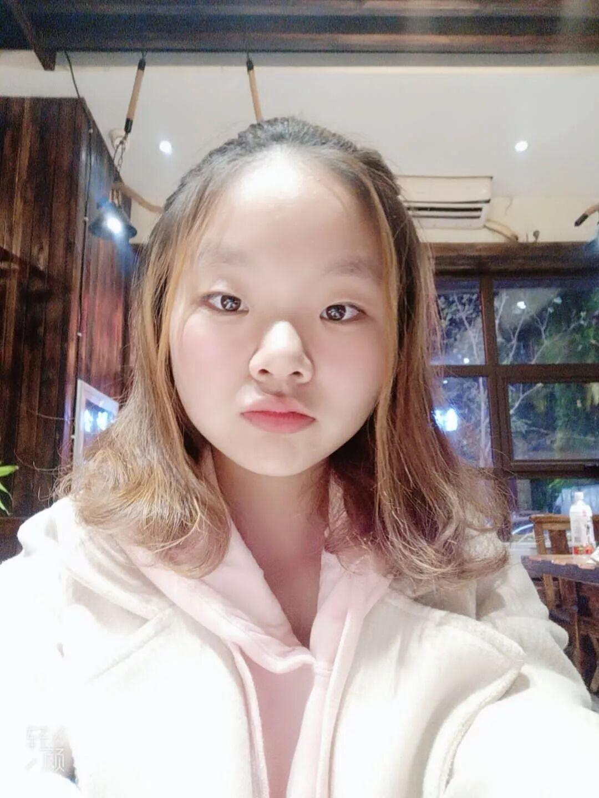
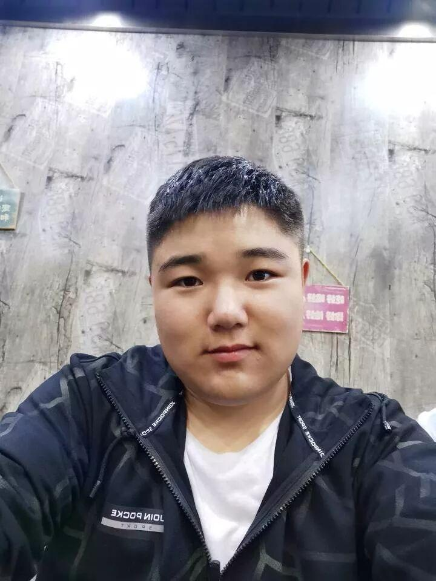
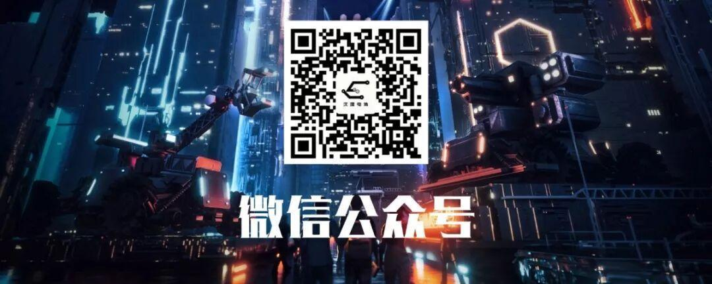

人事部——处理各种事务的小能手就是我们了
沈理电协
人事部
电协，一个和谐而友爱的大家庭，下面我将为你们介绍大家庭的一份子——人事部
1.负责社团人员信息管理
2.负责社团日常活动人员的安排通知
3.负责社团电协杯、电子设计大赛以及其他比赛和活动的报名信息整理、汇总
4.与社联对接，按时上交例会申请表
5.负责发布各种活动通知，必要时通知到每一个社团成员
6.负责每周五教学活动以及社团其他活动的签到


哈喽！ 大家好！ 我是刘兴健目前是电协人事部的一名干事，在这里遇见了许多美好！同时也想着要把这些美好传承下去！
汪开元
汪开元，男，大二人事，注重经历（没见过事就值得一见），辅助位置，怕责任但一定负责任。
芦艳阳
很幸运进入电协这个大家庭，这一年来收获了许许多多的东西，我是芦艳阳，人事部的一员。
张浩
大家好，我是18人事张浩，来自信息科学与工程学院。电协陪我从南到北流年似水，赠我细水长流温暖如斯。希望大家在电协融洽相处，共创辉煌。
付志宇
我是电协人事部大一小白，付志宇，很高兴能够进入电协这个大家庭，和许多喜欢科技热爱科技的人在一块并且为他们提供帮助，为电协贡献自己一份力量。如果有机会我也会进入技术部，和大家一起挥洒汗水，创造智慧结晶。

宋振宇
我是宋振宇，也来自机械工程学院。我五音不全却喜欢音乐，所以“善良”的我平时也就听歌，“很少”荼毒大家。Emmm......我想送给电协一句话:“上帝忘了给我们装上翅膀，我们就用机械飞翔。”

刘义含
我是计算机科学与技术三班的刘义含，性格外向，活泼开朗，喜欢尝试各种新鲜事物。
宋致宇
我是机自十班的宋致宇，同时也是电协人事部的一员，做事认真负责，是个比较细心的人，平时喜欢弹吉他。

高博涵
河北人氏。专业电子信息工程。性格随和，开朗大方，特别乐观。学习能力强，处事温和，认真果断。与人相处融洽。
周礼
大家好，我是人事部的周礼，来自重庆，我对电协充满兴趣，希望能跟大家学习到更多有趣的知识并希望在生活中与大家成为朋友。祝大家在电协生活愉快。
文案|王杰
排版|王杰
图片|人事部

